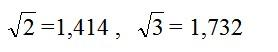

TRƯỜNG BƯỞI
Năm tôi mới vào, trường Bưởi còn là trường Cao đẳng tiểu học Pháp Việt (Collège) học bốn năm rồi thi ra lấy bằng Diplôme d’études primaires supérieures franco – indigènes tương đương với bằng Brevet élémentaire (sau đổi là Brevet d’études du première cycle) của Pháp. Một học sinh giỏi thi cả hai bằng và đậu hết. Năm sau trường mở thêm ba lớp nữa để dạy tới tú tài bản xứ (Baccalauréat local), và trường đổi tên là Lycée du Protectorat (Trung học Bảo hộ); ban Cao đẳng tiểu học đổi là ban Trung học đệ nhất cấp.
Năm 1927, cả nước chỉ có chín trường Cao đẳng tiểu học cho nam sinh và ba cho nữ sinh (tôi không kể những trường Sư phạm chuyên đào tạo giáo viên tiểu học); ở Bắc có ở Hà Nội (trường Bưởi), ở Nam Định, ở Lạng Sơn cho nam sinh; và một trường nữa (Đồng Khánh) ở Hà Nội cho nữ sinh, ở Trung có hai trường ở Huế (một cho nam, một cho nữ), một trường ở Vinh, một trường nữa ở Qui Nhơn, ở Nam có hai trường ở Sài Gòn: Pétus Ký cho nam, Gia Long cho nữ, một trường ở Mĩ Tho, một trường nữa ở Cần Thơ.
Trường Tây dạy tới tú tài Pháp (Bacalauréat métropolitain) thì cả nước chỉ có hai: Lycée Albert Sarraut ở Hà Nội và Lycée Chasseloup Laubat ở Sài Gòn (sau mới thêm trường nữ Marie Curie).
Ngoài ra còn một số trường của công giáo và một số trường tư.
Trường Bưởi nổi tiếng nhất ở Bắc cũng như Pétrus Ký ở
Giáo sư trường Bưởi thời tôi học phần nhiều là Việt, ở trường Cao đẳng Sư phạm Hà Nội ra. Giáo sư Pháp chỉ có hai ba người có bằng cử nhân hay tiến sĩ, còn thì chỉ có Brevet supérieur hoặc Brevet élémentaire. Hạng ít học này dạy rất kém, có tinh thần kì thị chủng tộc. Kỉ luật nhà trường rất nghiêm, hiệu trưởng và tổng giám thị Pháp rất hách dịch, có kẻ tàn nhẫn. Ở trường Albert Sarraut, giáo sư ít nhất phải có cử nhân, một số là tiến sĩ, thạc sĩ, dạy giỏi hơn, cho học sinh tự do hơn.
Chính vì sinh trong các gia đình có Nho học, nhà nghèo, nên học sinh trường Bưởi siêng hơn trường Albert Sarraut: một số đậu Diplôme d'études pimaires supérieures (bằng Thành chung) rồi, học tư hoặc tự học một năm là đậu được tú tài một của Pháp, và một số đậu tú tài bản xứ (chương trình gồm cả lớp Toán và lớp Triết của trung học Tây), rồi thi ngay tú tài Pháp đậu nữa mà còn đậu cao, cả Toán lẫn Triết, thành thử một năm đậu được ba bằng cấp tú tài[1].
Cũng vì là con cháu nhà Nho, nên tinh thần ái quốc xét chung cũng cao hơn học sinh trường Tây, và chỉ ở trường Việt mới có những cuộc bãi khoá như cuộc bãi khoá năm 1925 về vụ truy điệu nhà cách mạng Phan Châu Trinh. Trong vụ đó nhiều học sinh trường Bưởi bị đuổi.
Nếu làm thống kê thì tôi chắc số nhà cách mạng và số học giả, thi sĩ, nghệ sĩ, khoa học gia, chính trị gia… nổi danh xuất thân từ trường Bưởi đông hơn hết thảy các trường trung học khác ở Bắc nhập lại.
Ngay trong lớp tôi, tôi đã biết hai anh bạn làm cách mạng từ hồi còn học năm thứ ba: anh Thiều, anh Nghiêm mà tôi đã nhắc tới trong bài Tựa cuốn Gương danh nhân (1959); và trong khoá tôi (1927-31) có hai người bạn viết văn khá nổi danh từ trước thế chiến: Hướng Minh (Phó Đức Vinh) và Thao Thao (Cao Bá Thao).
BỐN NĂM TRƯỜNG BƯỞI
Trường Bưởi ở cuối đường Quan Thánh, trên bờ Hồ Tây, ngó qua vườn Bách Thảo, chỉ cách trường Yên Phụ hai làn nước, không tới 500 thước, nếu không có hai rặng cây đường Cổ Ngư che khuất thì ở trường này nhìn thấy trường kia được. Sau này, lên Đại học thì chỗ học và nội trú của tôi ở Sở Tổng Thanh tra Công chánh, đầu phố hàng Vôi (?) và trong khu Đại học Bobillot; hai nơi này đều ở bờ sông Nhị. Thành thử suốt đời học sinh của tôi dài mười mấy năm, chỉ di chuyển dọc theo bờ đê sông Nhị, trong một khoảng dài non 4 cây số (từ trường Bưởi tới học xá Bobillot) mà nhà tôi ở giữa đường, chỗ Cột đồng hồ Bờ sông. Quê tôi ở Phương Khê cũng ở bờ sông Nhị. Tôi thật có duyên với con sông lịch sử đó.
Từ nhà tới trường Bưởi đường dài khoảng hai cây số rưỡi, tôi đi bộ mất khoảng 45 phút, mỗi ngày bốn lượt, mười cây số, mất khoảng 3 giờ, vừa mệt sức vừa mất thì giờ. Hồi đó xe đạp còn là một xa xí phẩm, cả lớp tôi không chắc có được một chiếc. Riêng tôi thì ngay đồng hồ và áo mưa cũng không có. Những tháng cuối niên học, trời nắng gắt, tôi phải đi xe điện, đón xe ở góc phố hàng Buồm và hàng Ngang, mỗi chuyến hai xu. Đi xe điện thì đỡ mệt, tiết kiệm thì giờ độ một phần ba vì phải đợi xe và vẫn phải đi bộ một quãng. Tôi đậu khá cao, nhà lại nghèo, nếu biết mà làm đơn thì có thể được học bổng vào nội trú, có đủ tiện nghi, phương tiện tốt để học hơn.
Hai năm đầu, tôi không thích lối dạy của vài giáo sư mà sức khoẻ cũng kém, lại bị sưng đầu gối, mắt cá chân, phải nghỉ học non một tháng. Lần này nhờ uống một thứ thuốc ngâm rượu gồm 4, 5 vị rất nóng: quế chi, đại hồi, tiểu hồi, xương truật… và xông chân bằng khói cành dâu đốt cháy, tưới nước tiểu mà bệnh hết luôn, không tái phát nữa. Gần đây tôi mới biết bệnh đó là bệnh phong thấp, sưng khớp xương cấp (rhumatisme articulaire aigu), có thể biến chứng, hại cho tim; thời đó những gia đình nghèo như nhà tôi, đau nặng thì nhờ số phận, nhờ trời hết, chứ tiền đâu mà đi bác sĩ: mỗi lần coi mạch phải trả 5 đồng, bằng hai chỉ vàng. Mới mạnh được ít tháng thì bị mụn ghẻ… Mụn ghẻ nổi khắp người, mưng mủ lên, nửa năm mới hết, nên học chỉ vào hạng khá - khoảng thứ mười trong lớp thôi, nhưng cũng được phần thưởng vì xuất sắc về môn: Toán, Sử.
Lên năm thứ ba và thứ tư tôi lại vượt lên, đứng đầu lớp, được phần thưởng về hầu hết các môn, và cuối năm thứ tư lại được ra Nhà hát Tây lãnh thưởng. Tôi học rất đều, môn nào cũng từ hạng tư hạng ba trở lên, nhưng không có môn nào vượt xa bạn thứ nhì trong lớp về riêng môn đó. Tôi chỉ là một học sinh siêng một cách vừa phải - không bao giờ tôi thức khuya để học - mà hơn hạng trung bình, nhất là rất có qui củ, phương pháp. Trong lớp tôi thấy có anh học mau nhớ hơn tôi, nhưng thật xuất sắc thì trong niên khóa của tôi,cơ hồ không có ai cả. Sau này tôi nghe nói, rước chúng tôi mấy năm có một anh bạn kí tính lạ lùng, sách gì cũng chỉ đọc qua một lượt là nhớ. Hiện nay anh ta còn sống, trên bảy chục rồi mà trong đời chưa thấy lập nên sự nghiệp gì.
KÍ TÍNH KHÔNG PHẢI LÀ QUAN TRỌNG NHẤT
Có một kí tinh siêu đẳng là một điều rất lợi, nhưng bấy nhiêu chưa đủ. Thế hệ nào cũng có một vài người chỉ đọc sách qua một vài lần là nhớ, nhưng suốt thời Hán học dài ngàn năm, dân tộc ta chỉ có một Lê Quí Đôn và một Phan Huy Chú, còn biết bao người khác bỏ uổng tài của mình, có kẻ sinh kiêu căng hoặc tự tín quá, không chịu kiểm soát lại xem mình có nhớ đúng không, do đó mà lầm lẫn.
Từ thời thượng cổ loài người đã tìm mọi cách để giúp trí nhớ. Mới đầu người ta dùng cách buộc nút (kết thằng) hoặc gạch những vạch lên một cái gậy như các bộ lạc bán khai hiện nay ở châu Phi, châu Á. Khi có chữ viết thì người ta dùng chữ để ghi; và một số kinh của Trung Hoa như Mặc kinh, Dịch kinh (Thoán từ, Hào từ) chỉ là những cuốn “giúp trí nhớ” (aid-mémoire), lời rất gọn, phải có “truyện” để giải thích mới hiểu được. Người ta phải học thuộc lòng và Đông, Tây đâu đâu cũng tìm ta được những thuật để dễ nhớ, chẳng hạn đặt thành vè như Tam tự kinh[2]: thiên trời, địa đất, tử mất tồn còn… Người Trung Hoa phải thuộc lòng ngũ kinh, tứ thư, người Ả Rập cũng phải thuộc lòng kinh Coran. Thời đó trí nhớ quan trọng vào bực nhất.
Từ sau thế chiến thứ nhất, người phương Tây in mỗi ngày một nhiều Bách khoa tự điển cho mọi tuổi (trẻ nhỏ và người lớn) cho mọi môn, mọi giới người. Kiến thức mỗi ngày một tăng, không bộ óc nào nhớ cho hết được, và những bộ tự điển giúp chúng ta tìm kiếm những điều muốn biết; do đó trí nhớ bớt quan trọng, mà cách sắp xếp, tổ chức, tưởng tượng, tìm tòi thành ra cần thiết hơn.
Hiện những máy điện tử, những “bộ óc điện tử” công hiệu gấp triệu, gấp tỉ lần bộ óc con người. Chỉ trong vài giây nó làm được những phép toán rất khó mà các nhà toán học giỏi nhất phải vài năm mới làm xong. Nó ghi được tất cả những kiến thức của loài người, và ta muốn hỏi nó điều gì thì chỉ cần bấm nút là nó trả lời liền. Như vậy thì cần gì phải nhớ nữa? Hồi nhỏ tôi phải học như cuốc kêu mùa hè không biết bao nhiêu lâu mới thuộc bảng cửu chương, và ở trung học phải thuộc những con số như

để làm toán. Ngày nay nghe nói ở Pháp học sinh tiểu học khỏi phải học cửu chương, và tôi mới được một anh bạn cho coi một máy điện tử nhỏ bằng bàn tay, nặng độ 200 gram, do Nhật chế tạo, vừa là đồng hồ báo thức, vừa là máy tính làm được bốn phép tính căn bản và phép lấy căn số hai (extraction de la racine carrée) với sáu số lẻ. Mà giá chỉ vào khoảng 30 Mĩ kim. Chỉ vài chục năm nữa, những máy điện tử như vậy sẽ phổ biến khắp thế giới, lợi biết bao cho học sinh. Nhưng tôi nghĩ không thế nào bỏ hẳn sự luyện kí tính được. Không nên bắt trẻ nhớ những cái vô ích, nhưng vẫn có những điều căn bản mà người nào cũng phải nhớ, nếu không thì không gọi là có học thức được. Công việc đầu tiên là định sao cho đúng những điều nào là căn bản.
CÁC THẦY DƯƠNG QUẢNG HÀM, FOULON, THẨM QUỲNH, NGUYỄN GIA TƯỜNG…
Trong số giáo sư trường Bưởi tôi được học, tôi quí hai thầy nhất: Thầy Dương Quảng Hàm và thầy Poulon.
Tôi đã viết một bài về thầy Dương đăng trong số Bách Khoa 236 (1-11-1966). Thầy có đủ tư cách một nhà mô phạm và một học giả. Thầy dạy Việt văn ở ban Tú tài; Việt văn và Pháp văn ở ban Cao đẳng tiểu học, năm thứ ba và thứ tư. Thầy nhỏ người, vui vẻ, nụ cười hồn nhiên, sống rất giản dị, làm việc rất có qui củ và cẩn thận. Đối với chúng tôi, thầy rất công bằng, nghiêm một cách vừa phải, có phần hơi dễ dãi nữa; một lần thầy tỏ ra đa cảm và đại độ khi cả lớp chúng tôi làm reo không học bài thuộc lòng (récitation) tả Hồ Tây (ở Hà Nội) của Jules Boissière, một nhà văn thực dân mà chúng tôi rất ghét. Thầy chỉ tỏ vẻ buồn thôi chứ không hề phạt chúng tôi. Chuyện đó tôi thuật lại rõ trong số báo kể trên.
Thầy soạn vài ba cuốn sách giáo khoa cho ban Trung học: một cuốn về sử Việt, bằng tiếng Pháp: Abrégé d’Histoire d’Annam; hai cuốn về văn học Việt
Thỉnh thoảng thầy cũng viết bài in trên báo Nam Phong và một nội san của một cơ quan Văn hóa Pháp nghiên cứu về Viễn Đông hay về Đông Dương. Suốt đời, hễ thầy thôi giảng thì cầm cây bút. Tất cả học sinh trường Bưởi không ai không trọng thầy vì vậy. Mà các bạn đồng sự Pháp, Việt của thầy cũng quí thầy nữa. Thật đáng tiếc, thầy không thọ, mất trong những ngày đầu cuộc kháng Pháp ở Hà Nội.
Thầy Foulon trái lại, cao lớn, có lẽ cao hơn một thước tám, lúc nào cũng hấp tấp, rạp mình xuống lái chiếc xe “cuốc” (course), có vẻ khác đời, chứ không hẳn là một triết nhân.
Thầy dạy luân lí (Morale) ở năm thứ tư cho chúng tôi và dạy triết (hay Pháp văn) cho ban Tú tài. Thầy bắt học sinh gắng sức nhiều, giảng cao hơn chương trình, gắt với học sinh kém, nhưng thân với học sinh giỏi. Tôi rất chán cái lối học luân lí trong sách rồi trả lời một vài một vài câu hỏi. Thầy Foulon không dùng sách, gần suốt giờ giảng về một đề tài nào đó, chúng tôi ngồi nghe, ghi chép rồi về nhà viết lại thành bài, thường dài một trang rưỡi khổ giấy lớn (21x33); giờ sau thầy gọi một vài trò lên đưa tập cho thầy coi, nếu sai thì sửa lại. Bài nào tôi viết lại cũng kĩ, được thầy khen. Như vậy mỗi tuần gần như chúng tôi phải làm thêm một bài luận mà mau tiến về Pháp văn được. Tôi thích lối học đó, nó rất có kết quả. Thầy lại có tình lưu luyến với học trò, không kì thị Việt. Khi sắp về Pháp nghỉ sáu tháng, thầy tới trường từ biệt chúng tôi, thấy tôi chưa đến, nhắn các bạn tôi rằng thầy gởi lời thăm và ân hận không đợi tôi được vì bận nhiều việc.
Cuối niên học (năm thứ 4), thầy Dương ghi vào học bạ của tôi: “Le meilleur élève de sa classe à tous les points de vue”; thầy Poulon ghi: “Excellent élève”.
Còn hai thầy nữa sau cũng viết sách như thầy Dương: thầy Thẩm Quỳnh, cử nhân Hán học, dịch Kinh Thư, bộ Quốc gia giáo dục xuất bản năm 1965, bản dịch của thầy kĩ hơn bản của Nhượng Tống; và thầy Nguyễn Gia Tường, anh họa sĩ Nguyễn Gia Trí, dạy chúng tôi suốt bốn năm về môn Khoa học tự nhiên (Sciences naturelles - nay gọi là Vạn vật học); sau khi về hưu ở Sài gòn có viết một cuốn mỏng về giáo dục và nhiều bài cũng về giáo dục, đăng trên tạp chí Bách Khoa. Thầy rất buồn về sự bê bối trong các trường tư ở
NGOẠI Ô HÀ NỘI
Trường Bưởi cũng ở trên bờ một cái hồ - hồ Tây - như trường Yên Phụ, nhưng rộng lớn hơn nhiều, kiến trúc mới hơn, có nhiều dãy lớp học mà hai dãy có lầu làm phòng ngủ cho học sinh nội trú. Tôi không thích nó bằng trường Yên phụ vì thiếu vẻ cổ kính, nhưng nó được một điểm là ở giữa một khu có nhiều cổ tích.
Phía bên trái là con đường xe điện lên làng Yên Thái, tức làng Bưởi; rồi tới vườn Bách Thảo, nhỏ hơn Sở Thú ở Sài Gòn, nhưng trong vườn có núi Nùng mà hễ nhắc tới Thăng Long thì ai cũng nghĩ ngay tới núi Nùng, sông Nhị. Gọi là núi chứ thực sự chỉ là một cái gò cao bốn năm thước có thể là nhân tạo. Trước hoặc sau giờ học, những hôm nào ít bài, có một giờ nghỉ giữa hay cuối buổi, chúng tôi thường rủ nhau lang thang trong vườn nhìn những chùm nhãn, những trái sấu trên cây hoặc hưởng hương sen trong hồ, hương hoàng lan trên mấy chuồng khỉ. Sau vườn Bách Thảo là làng Ngọc Hà, làng chuyên cung cấp hoa cho thành phố: đào, mai, cúc, thược dược, lan, hồng, huệ, sói, nhài… Thiếu nữ làng này nửa quê nửa tỉnh, tình tứ, thuỳ mị mà lanh lợi, được Khái Hưng đưa vào tiểu thuyết Gánh hàng hoa. Tiến vô chút nữa tới chùa Một Cột, một kiến trúc nhỏ nhưng độc đáo, như một bông sen nổi giữa hồ.
Góc đường Quan Thánh và đường Cổ Ngư (nay đổi tên là đường Thanh niên) có đền Quan Thánh, tức đền Trấn Võ, cất từ ngàn năm trước, nổi tiếng vì một tượng thánh bằng đồng đen cao bốn thước, nặng bốn tấn, đúc vào đời Trần (?).
Xưa nay trong sân đền mỗi năm có một cuộc thi thơ. Khoảng giữa đường Cổ Ngư, trên hồ Tây, ở gần bờ có chùa Trần Quốc, nơi mà vua Lê, chúa Trịnh thường lại hứng gió ngắm cảnh. Hồ Tây, từ đền Quan Thánh tới chùa Trần Quốc xưa trồng sen, mùa hè hương thơm ngào ngạt; còn hồ Trúc Bạch thì nước trong, cạn, tắm rất mát, nghe nói ngày nay nước đục vì các cống ở chung quanh trút hết nước bẩn vào. Tôi nhớ những buổi chiều cùng với bạn ngồi trên đường Cổ Ngư này nhìn mặt hồ nhấp nhô, loang loáng ánh nắng, đàn chim bay về phía núi Tản xanh thẳm ở chân trời, nơi quê hương tôi mà nhớ câu: “Nhập thế cục bất khả vô văn tự” của Nguyễn Công Trứ, trong lòng nổi lên một ước mơ ngông ngông.
Cuối đường làng Yên Phụ ở chân đê sông Nhị; chỗ này cũng trồng nhiều hoa như Ngọc Hà nhưng có phần thú hơn vì nằm ngay trên bờ hồ. Trong tiếng sóng vỗ vào bờ, tôi tưởng như văng vẳng có tiếng ngâm thơ của Hồ Xuân Hương. Chung quanh hồ, phía bên Nghi Tàm cũng như phía bên Thụy Khuê, có biết bao cổ miếu, cổ tự, đình đài, nhiều ngôi xây cất từ đời Lý, cách nay tám chín thế kỉ, hễ bước vào là lòng tôi rung động nhè nhẹ một cách tuyệt thú.
Những ngày lễ, nhất là đầu và cuối nghỉ hè, tôi thường đi chơi xa hơn, như vô Thái Hà ấp, lên Đống Đa thăm đền Trung Liệt. Đây là nơi vua Quang Trung đã chôn mấy vạn quân Thanh năm 1789, năm mà ở Pháp có cuộc đại cách mạng. Thời cha tôi còn sống, có lần người dắt tôi leo những bực gạch lên đền này và bảo tôi đọc ba chữ Trung Liệt Miếu ở cửa đền. Đền thờ trung thần liệt sĩ của mình, nhưng hằng vạn vong hồn Trung Hoa mà xương chồng chất lên thành gò đó chắc cũng được hưởng chung hương khói.
Từ ấp Thái Hà vô Ngã Tư Sở, quẹo qua tay trái theo con đường trải đá gồ ghề bên bờ sông Tô Lịch, qua các làng Thượng Đình, Hạ Đình. Sông Tô thời đó cạn, chỉ còn là một cái mương nhỏ, rau muống phủ đầy, nghe nói nay đã vét, đào rộng thêm. Hạ Đình là quê mẹ tôi. Tôi nhớ những ngày thanh minh đi tảo mộ cùng với họ hàng phố hàng Đường. Tiết thanh minh ngoài đó đã hết lạnh nhưng cũng chưa nóng. Bảy giờ sáng chúng tôi lên xe điện ở bờ hồ Hoàn Kiếm. Xe đông người đi tảo mộ, gia đình nào cũng có một bà già và vài thiếu nữ mang những cái quả sơn son đựng nhang, rượu, hoa quả, xôi thịt. Họ cùng đi chuyến xe Hà Đông, mỗi gia đình xuống một nơi: Ô Chợ Dừa, Thái Hà ấp, Ngã Tư Sở hoặc xa hơn nữa.
Chúng tôi vào làng Hạ Đình, đi thăm năm sáu ngôi mộ trên một cánh đồng trồng hoa màu ở đầu làng, từ ngôi này đến ngôi kia có khi phải đi vài ba trăm thước trên bờ ruộng. Đầu tháng ba, không khí trong sáng, hoa ít hơn nhưng lá xanh hơn, chim ríu rít trên những cành gạo đỏ rực. Lác đác trên cánh đồng có những đám năm ba người, tà áo đủ màu phất phơ trên đám cà hay cải xanh; hương khói tỏa nhẹ trong làn gió. Gặp nhau, người ta nhìn nhau mỉm cười hoặc hỏi nhau vài câu lịch sự.
Thăm xong các ngôi mộ rồi, chúng tôi tìm một gốc gạo, một gốc đa ở giữa đồng hoặc trong một sân đình, ngả đồ cúng ra ăn rồi mới vào nhà bà con nghỉ. Vui mà có ý nghĩa hơn những picnic ngày nay nhiều. Khoảng bốn giờ chiều, bớt nắng, chúng tôi lên xe điện về nhà. Ngồi trên xe tôi thấy buồn buồn vì hết một ngày vui, và không lần nào tôi không nhớ đoạn tả cảnh đi chơi thanh minh của chị em Thúy Kiều. Trong văn thơ của mình, không có bài nào tả lễ tảo mộ hay như đoạn đó, mà cũng không có bài nào tế thập loại chúng sinh bi thảm như bài của Nguyễn Du. Lựa tiết Thanh minh để làm lễ tảo mộ, người phương Đông chúng ta yêu đời hơn người phương Tây: họ lựa mùa thu - ngày 2-11 - để làm Fête des morts, đi tảo mộ, và cảnh nghĩa trang của họ ngày đó dưới nền trời u ám, trong tiếng gió xào xạc, với những ngọn nến chập chờn bên những thánh giá trắng gợi cho tôi cảnh những cuộc hội họp của tín đồ Thiên Chúa giáo trong những hầm mộ (catacombes) thời họ bị người La Mã đàn áp.
Ở làng Hạ Đình, tôi nhiều lần rẽ vào thăm nhà thờ cụ Lê Đình Duyên, thầy học của ông nội tôi mà cũng là ông nội chồng một bà cô tôi, con gái cụ Đổ Uẩn mà chương II tôi đã nhắc tới. Cụ làm Đốc học Hà Nội trào Tự Đức, thời Hà Nội bị Pháp chiếm, có khí tiết, được sĩ phu Hà Nội rất trọng. Nhà thờ của cụ bằng gạch nhưng rất nhỏ, chiều sâu chưa đầy ba thước, chiều ngang chỉ độ bốn thước, giữa có một cái bệ gạch, hai bên cắm hai tấm bảng “Vinh qui” vua ban khi cụ đậu Hoàng Giáp. Đồ thờ không có gì quí. Phía trước là một nhà mái lá, phía sau là một căn bếp mái lá, bên trái là một cái ao nhỏ. Đất vườn rộng độ một sào. Các nhà Nho chân chính thời xưa đa số nghèo như vậy.
Từ Hạ Đình, cũng theo bờ sông Tô Lịch, tôi tiến vô làng Lủ nổi tiếng về cốm Lủ - không ngon bằng cốm Vòng - và những vườn ổi; rồi tới làng Quang có loại vải quí, hột rất nhỏ, xưa để tiến vua, và có đền thờ Chu Văn An; đi vô nữa, trên bờ sông Nhuệ, một bên là Tả Thanh Oai (tục gọi là làng Tó) quê của Ngô Thời Sĩ, Ngô Thời Nhiệm, một bên là Hữu Thanh Oai. Tất cả khu này trên bờ sông Tô Lịch và sông Nhuệ, lan qua các làng Nhân Mục[3] (Mọc Chính Kinh, Mọc Quan Nhân...) bên kia đường xe điện đi Hà Đông, từ Ngã Tư Sở quẹo qua tay phải, xưa là đất văn vật, sinh được nhiều danh nho, đâu đâu cũng có dấu tích của cổ nhân, gợi cho tôi một niềm cảm hoài vô hạn.
Nhưng hai cảnh tôi thích nhất là cảnh chùa Láng, u nhã mà cổ kính, “đệ nhất tùng lâm của cố đô”, nay còn hai hàng thông từ cổng đưa vào tới một sân lát gạch bát tràng, giữa có một nhà bát giác và cảnh đền Voi Phục với hàng chòi mòi ở bên bờ lạch, hồ nước ở giữa sân và vườn nhãn ở sau đền. Chùa Láng thờ Từ Đạo Hạnh tương truyền là tiền thân của Lí Thần Tôn và xây cất từ năm 1164, hiện nay ở bên đường đê Parreau[4], vết tích của Đại La Thành (?). Đền Voi Phục thờ một vị hoàng tử đời Lí có công dẹp giặc, nằm bên đường xe điện từ hồ Hoàn Kiếm đi Ô Cầu Giấy, cách Ô non một cây số.
Vì hai cảnh đó gần nhau, nên lần nào tôi cũng bỏ trọn một buổi, từ hai giờ chiều đến tối để thăm cả hai nơi một lượt. Tôi thường đi một mình để hưởng cái thú cô liêu, hoài cổ. Nếu có bạn thì tôi thích bạn nào ít nói, mỗi người theo dõi tâm tư riêng của mình chỉ lâu lâu trao đổi vắn tắt cảm tưởng với nhau thôi như Valéry trong bài Le bois amical:
-----Nous avons pensé des choses pures
-----Côte à côte, le long des chemins,
-----Nous nous sommes tenus par les mains
-----Sans dire... parmi les fleurs obscures.
Nghĩa:
-----Chúng tôi đã nghĩ đến những điều thanh cao, tinh khiết,
-----Đi cạnh nhau… dài theo các quãng đường
-----Chúng tôi đã cầm tay nhau
-----Không nói năng gì… giữa những khóm hoa u tối.
Thường tôi đi xe điện lên đền Voi Phục trước, ngồi dưới gốc chòi mòi nghe chim ríu rít trên cành, rồi vào sân đền, ngồi trên một bệ cao, nhìn hồ nước, hưởng hương sói, hương lan, hương hồng, sau cùng ra vườn nhãn ở sau đền, mua một bó, ăn ngay dưới gốc cây.
Từ vườn tôi kiếm đường nhỏ ra đê Parreau, quẹo tay phải để lại chùa Láng. Con đê này cao hơn mặt ruộng khoảng hai thước, trải nhựa, rợp bóng cây, ít xe, vừa tản bộ vừa nhìn phong cảnh, rất thú. Lâu lâu gặp một quán nước bên đường bán trà tươi và chuối, bánh gai, bánh nhợm. Đến chùa Láng thì ánh tà dương đã xiên qua những lá thông, chiếu xuống con đường lát gạch, chỗ thưa chỗ đậm. Thơ thẩn ở dây một lát, tôi trở ra đường Parreau đi ngang qua làng Hạ Yên Quyết (tục gọi là Cót) một làng văn học có tiếng, để tới làng Bưởi.
Mùa thu, chiều thường có một làn sương mỏng, nhẹ như màn lụa phơn phớt xanh lam phủ lên đồng ruộng, lũy tre, cổng xóm ở hai bên đê, cảnh vật mờ mờ, buồn dìu dịu, thật nên thơ.
Ngoại ô Hà Nội có nhiều cảnh thiên nhiên đẹp, nhiều di tích lịch sử, nên lần nào đi chơi như vậy tôi cũng nhớ đoạn Chateaubriand tả cảnh ngoại ô La Mã trong tập Mémoires d'Outre tombe và tiếc trong văn thơ của mình chưa có bài nào tương tự. Ngoại ô Huế cũng nên thơ, nhiều di tích, mà có phần lộng lẫy hơn, nhiều dinh thự hơn (khu Kim Luông), nhưng tôi chưa được biết, ngoại ô Sài Gòn thì kém xa, chỉ có cảnh vườn Lái Thiêu là nhã thú.
Tôi thích bài Bán bán ca của Lí Mật Am, từ hồi trẻ tôi vẫn mong:
-----Sống ở nơi nửa thành thị, nửa thôn quê,
-----Có vườn tược ở nửa đường lên núi, nửa đường xuống sông,
-----Nửa đọc sách, nửa làm ruộng, nửa buôn bán,
-----Nửa là kẻ sĩ, nửa bà con với bình dân...
(Lâm Ngữ Đường dẫn trong The Importance of Living - Bản dịch của tôi: Sống đẹp - Tao Đàn 1965).
Không được vậy thì cũng nguyện có một khu vườn ở ngoại ô ở Hà Nội hay Huế, vậy mà gần suốt đời (trừ mấy năm di tản) tôi phải sống ở giữa Sài Gòn bụi bặm, náo nhiệt.
[1] Có lẽ cụ Nguyễn Hiến Lê muốn nói, trong một năm đậu một bằng Tú tài bản xứ và hai bằng Tú tài Pháp: một ban Toán (Mathématiques élémentaires) và một ban Triết (Philosophie). Trần Bích San, trong bài Giáo dục Việt
“Bậc Cao Đẳng Tiểu Học (Primaire) 4 năm: Học xong 4 năm được thi lấy bằng Cao Đẳng Tiểu Học (Diplôme d'Étude Primaire Supérieurs Franco-Indigène) còn gọi là bằng Thành Chung. Phải có bằng Thành Chung mới được dự thi lên bậc Trung Học tức bậc Tú Tài. Các trường dạy bậc Cao Đẳng Tiểu Học được gọi là Collège.
Bậc Trung Học (Enseignement Secondaire) 3 năm: còn được gọi là bậc Tú Tài Pháp-Việt, bậc Trung Học gồm 3 năm [ngày nay là các lớp 10, 11, 12]. Học xong 2 năm đầu được thi lấy bằng Tú Tài phần thứ nhất (Baccalauréat, 1ère partie). Đậu bằng này được học tiếp năm thứ ba không phải thi tuyển. Năm thứ 3 được chia làm 2 ban: ban Triết và ban Toán. (…) Từ niên học 1937-1938 trên toàn cõi Việt
Từ niên học 1926-1927 Pháp thiết lập thêm chế độ Tú Tài Bản Xứ (Baccalauréat Local) học thêm các môn về văn chương Việt
XBGZHQBJUW2X4NUF3FWEGNH3XE?eid=
9XO7OqY7kX5otk0tIuqoBqVyQ_FtjPU_SKj7vrgpCSNnO2379w).
(Goldfish)
[2] Đúng ra là Tam thiên tự. (Goldfish).
[3] Tục gọi là làng Mọc. (Goldfish)
[4] Nay là đường Hoàng Hoa Thám. Goldfish).